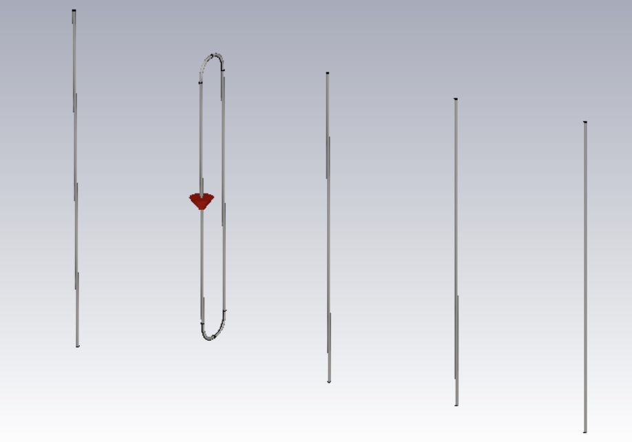

| Portfolio Home |
A 5-element Yagi-Uda antenna designed and simulated for operation at 50.1 MHz using CST Studio Suite. The array consists of a reflector, driven element, and three directors optimized for directional radiation and impedance matching.
The design incorporates element-diameter and boom-diameter compensation, along with a folded-dipole driven element for impedance transformation and direct matching to a 50 Ω port.
Full 3D CST model of the 5-element Yagi-Uda antenna, including the reflector, driven element, directors, and boom.

5-element Yagi-Uda antenna model in CST Studio Suite.
The element dimensions and spacing were optimized around the 50.1 MHz design frequency. Element and boom diameter effects were compensated using normalized geometric dimensions.
Element geometry and optimization results.
A folded-dipole driven element was used to provide an impedance step-up and direct connection to the standard 50 Ω simulation port.

Folded-dipole driven element and feed arrangement.
The simulated radiation pattern demonstrates the directional behavior of the completed antenna array.

Simulated far-field radiation pattern.
S-parameter simulation was used to evaluate the input match around the 50.1 MHz design frequency.

Simulated input reflection coefficient around the design frequency.
Tools: CST Studio Suite
Skills: Antenna design, electromagnetic simulation, Yagi-Uda arrays, impedance matching, S-parameter analysis, radiation-pattern analysis, and antenna optimization.
EE Portfolio • Department of Electrical and Computer Engineering • Iowa State University